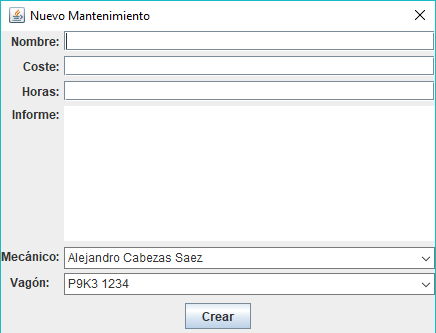

Para poder crear un nuevo campo deberemos pulsar en el botón "Nuevo". Una vez pulsado,
nos saldrá la pantalla que veremos en la imagen de abajo.
En dicha imagen (al pulsar el botón en la pestaña "Mantenimiento"), deberemos incluir el nombre
del mantenimiento que queramos, en los campos de abajo, deberemos poner el coste, las horas y una pequeña
descripción.
Tras poner dichos datos deberemos seleccionar al mecánico y al vagón al que le pertenecen. Una vez hagamos
todo esto, pulsamos en el botón "Crear" y se nos añadirá un nuevo campo a nuestra tabla con todos los datos
que le metimos.
